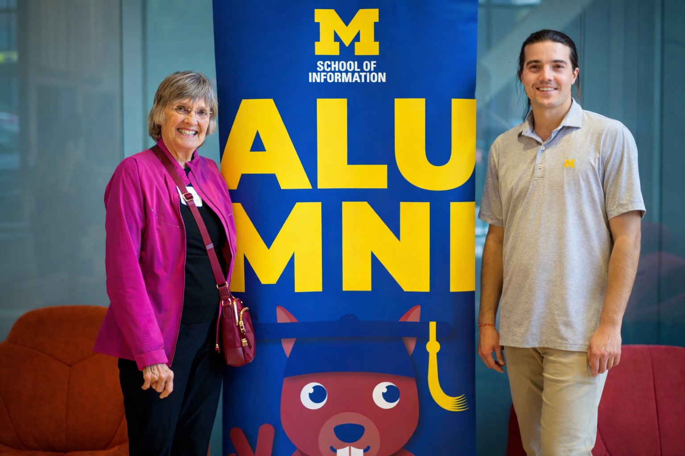

Alumni Network
UMSI has a vast global alumni network of professionals working in a variety of fields. We strive to connect our alumni and students to strengthen this network and foster success amongst our graduates. Whether you wish to get connected for career advice, interview tips, or to get involved with your local network, UMSI is eager to assist you.
Events & Tools
- On Campus Events:From career workshops, to homecoming celebrations, and alumni industry panels, UMSI hosts a variety of in person events on campus open to alumni and students where professional connections thrive.
- Off Campus Opportunities: All accross the globe UMSI graduates gather for numerous activities hosted by various alumni chapters. Such events include football watch parties, community service projects, and mixers where invaluable bonds and connections are formed.
- Career Tools: UMSI & The University of Michigan provides its students a with a wealth of resources to help them grow their networks and fulfill their career goals. Such tools include UMSI Career Link, CEW+, and the UM Career Center.
Networking Resources
Make use of the tools offered by the University of Michigan and UMSI to contect with alumni to attend networking events, get invovled with your local alumni chapter, or to receive career advice. Current students and alumni can make use of these resources to access the University of Michigan's global alumni network to form industry connections and find the perfect career.